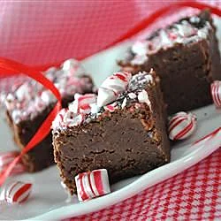

Aunt Teen's Creamy Chocolate Fudge

Description
This was my aunt's recipe for fudge, passed
down through the family. It's better than
any fudge I've ever had at the Jersey
shore, and easy enough to whip up in
15 minutes or so.
Ingredients
- 1 (7 ounce) jar marshmallow creme
- 1-1/2 cups white sugar
- 2/3 cup evaporated milk
- 1/4 cup butter
- 1/4 teaspoon salt
- 2 cups milk chocolate chips
- 1 cup semisweet chocolate chips
- 1/2 cup chopped nuts
- 1 teaspoon vanilla extract
Steps
- Line an 8x8 inch pan with aluminum
foil. Set aside.
- In a large saucepan over medium heat,
combine marshmallow cream, sugar,
evaporated milk, butter and salt.
Bring to a full boil, and cook for 5
minutes, stirring constantly.
- Remove from heat and pour in semisweet
chocolate chips and milk chocolate
chips. Stir until chocolate is melted
and mixture is smooth. Stir in nuts and
vanilla. Pour into prepared pan. Chill
in refrigerator for 2 hours, or until
firm.